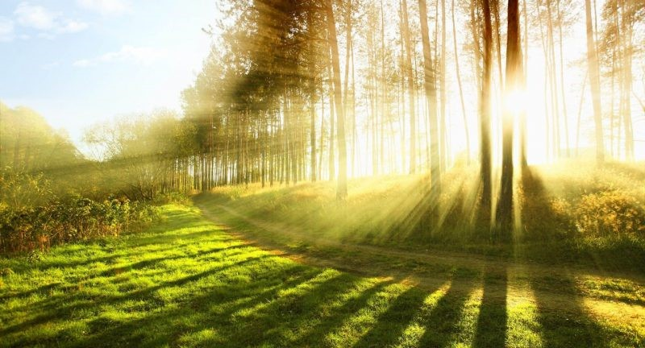

El medio ambiente

Te explicamos qué es el medio ambiente y qué elementos lo componen. Además, las causas de su contaminación y cómo protegerlo.
El medio ambiente se compone de factores bióticos y abióticos.
Te explicamos qué es el medio ambiente y qué elementos lo componen. Además, las causas de su contaminación y cómo protegerlo.
El medio ambiente se compone de factores bióticos y abióticos.
El medio ambiente es el espacio en el que se desarrolla la vida de los organismos y que permite su interacción. Está conformado por seres vivos (factores bióticos), por elementos sin vida (factores abióticos) y por elementos artificiales creados por el hombre.
Cuando se habla de factores bióticos se hace referencia a todos los seres vivos que viven en un ambiente (las bacterias microscópicas, los hongos, la flora, la fauna, los seres humanos) y las interacciones entre ellos; por su parte, los factores abióticos son aquellos que carecen de vida pero determinan el espacio físico del ambiente (como el aire, el suelo y el agua) y resultan esenciales para la subsistencia de los organismos vivos.
Entre los elementos artificiales se incluye a todos aquellos creados por el ser humano, como la urbanización, la cultura, las tradiciones. La suma de estos valores naturales, culturales y sociales en un momento histórico y en un lugar en particular
Todos los organismos obtienen del medio ambiente todos los elementos que necesitan para vivir: desde el aire y el agua, hasta el refugio y el alimento que les permite crecer, desarrollarse y obtener energía. Mantener el equilibrio del medio ambiente es fundamental para mantener la vida en la Tierra tal como la conocemos. Además, los seres humanos utilizan una gran cantidad de recursos naturales del medio para cubrir sus necesidades como vestimenta, alimento y objetos de uso cotidiano entre otros ejemplos. Por eso el ser humano debe conocer y cuidar sus interacciones con el medio ambiente para gestionar de manera sostenible los recursos naturales que permiten su crecimiento económico y su desarrollo. La fauna y la flora son de vital importancia para el medio ambiente ya que poseen una interdependencia que posibilita el equilibrio de las especies y el desarrollo de la biodiversidad. La supervivencia del hombre depende en gran medida de las interacciones y el uso consciente de la flora, la fauna y los recursos naturales, así como del desarrollo de las relaciones sociales, políticas y económicas que forman parte de su medio.
Los recursos naturales que explota el ser humano forman parte del medio ambiente.
• El medio ambiente debe ser cuidado y protegido para el desarrollo de las especies actuales y futuras. Es estudiado por la ecología que es la rama de la biología que estudia a los seres vivos y la interacción de estos con su medio.A lo largo de los años las especies de plantas y animales han ido evolucionando y
adaptándose a los diferentes ecosistemas. La adquisición de características que les
otorgaron tolerancia para resistir en un determinado medio ha hecho que algunas especies
hayan perdurado a lo largo del tiempo, mientras que otras que no han podido adaptarse se
hayan extinguido.
Muchas de las transformaciones en el medio ambiente se dan de manera natural y no dependen
del ser humano, por ejemplo, los cambios en el ecosistema que puede generar la erupción de
un volcán o una inundación.
Sin embargo, la mayoría de los cambios en el medio ambiente se dan por la acción del
hombre. El hombre es el organismo vivo que más interviene el medio: no solo crea el
medio ambiente artificial, sino que explora, modifica y utiliza los recursos del medio
ambiente natural para su supervivencia y bienestar.
Aunque algunas de las transformaciones introducidas por el hombre no tienen impactos
negativos significativos en el ambiente natural, muchas otras traen aparejados daños
irreversibles producto de la contaminación y la destrucción del medio.
El hombre ha ido modificado el medio ambiente natural mediante la urbanización, el uso
desmedido de recursos naturales y la industrialización.
Con la Revolución Industrial, comenzó a aumentar la contaminación del medio ambiente.
La contaminación ambiental es definida como la presencia de agentes químicos, físicos o
biológicos en el ambiente que pueden tener efectos nocivos sobre la seguridad y salud
de los seres vivos. A medida que la población comenzó a crecer y aumentar su tecnología,
el impacto del ser humano sobre el medio ambiente natural comenzó a ser mayor y más nocivo.
La contaminación comenzó a agravarse exponencialmente en la segunda mitad del siglo XVIII
a partir de la Revolución Industrial, por la explotación de recursos minerales y fósiles.
De esta manera, el equilibrio del sistema ambiental se perdió y para muchos seres vivos
resultó incluso imposible adaptarse a estos grandes cambios.
La contaminación del medio ambiente producida por el ser humano puede tener diversos
orígenes y afectar diferentes elementos y organismos del medio natural:
• Destrucción de los bosques. Es producida por la tala indiscriminada de árboles que
son esenciales para la supervivencia de los seres vivos. En la mayoría de los casos
ocurre por la expansión de áreas urbanas, la expansión de zonas de industrias o para
actividades de ganadería y agricultura.
• Contaminación del agua. Es producida, principalmente, por los desechos industriales
y domésticos arrojados a ríos y mares.
• Explotación de los recursos naturales. Las actividades de la megaminería, que incluye
la extracción de petróleo, generan desechos y ponen en riesgo a los ecosistemas.
• Contaminación del aire. La industria y los automóviles liberan gases que contribuyen
al calentamiento global.
• Disminución de la biodiversidad. El impacto que la contaminación del aire y del agua
produce en las diferentes especies de organismos vivos genera un desequilibrio en los
ecosistemas, que lleva a la extinción de aquellas especies que no logran adaptarse a
los cambios en el medio.
• Contaminación del suelo. El uso de pesticidas y los residuos plásticos, nucleares y
no biodegradables produce una degradación de los suelos.
Para evitar la destrucción del medio ambiente y la supervivencia de los seres
vivos y el desarrollo humano, es necesario tomar los recaudos y las acciones
necesarias. En primer lugar, se debe hacer un buen uso de los recursos naturales,
no utilizarlos de manera indiscriminada, y fijar la atención en cuestiones como el
cambio climático y la protección de la biodiversidad.
Para llevar adelante esta tarea de protección medioambiental es importante que todos
los actores de la sociedad tomen conciencia y se involucren. Es necesario exigir a
los Estados y gobernantes que promuevan el cuidado del medio ambiente y controlen el
accionar de las industrias, empresas y de la comunidad científica.
También desde los hogares cada individuo puede tomar medidas frente al consumo y la
producción, y también cambiar hábitos y rutinas hacia otras más sustentables como:
• Utilizar de manera consciente el agua.
• No arrojar residuos a la vía pública.
• Reducir el uso de envoltorios plásticos.
• Utilizar una bolsa de tela para las compras y así desalentar el uso de bolsas
plásticas en los comercios.
• Mantener los espacios verdes urbanos en condiciones.
• Utilizar el transporte público o la bicicleta en lugar de automóviles o buses.
• Informarse sobre empresas que busquen reducir el impacto ambiental en la producción
de sus bienes y servicios, y consumirlos.
• Utilizar la energía de manera consciente: apagar las luces, evitar mantener
aparatos enchufados cuando no se están utilizando.
• Separar los residuos domésticos.
• Reutilizar los envases plásticos y de vidrio.
• Fomentar estas acciones entre amigos y familiares.